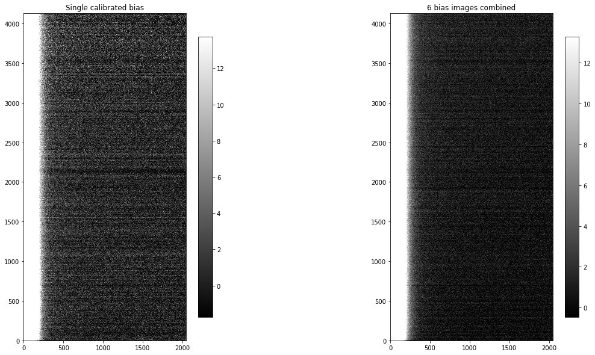
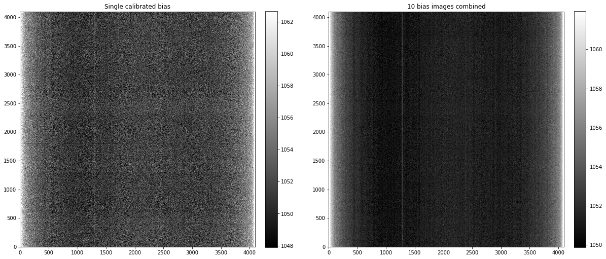

Combine bias images to make master
The final step is to combine the individual calibrated bias images into a single combined image. That combined image will have less noise than the individual images, minimizing the noise added to the remaining images when the bias is subtracted.
Regardless of which path you took through the calibration of the biases (with overscan or without) there should be a folder named reduced that contains the calibrated bias images. If there is not, please run the previous notebook before continuing with this one.
from pathlib import Path
import os
from astropy.nddata import CCDData
from astropy.stats import mad_std
import ccdproc as ccdp
import matplotlib.pyplot as plt
import numpy as np
from convenience_functions import show_image
#download_base_url = 'http://physics.mnstate.edu/craig/ccd-guide/'
Recommended settings for image combination
As discussed in the notebook about combining images, the recommendation is that you combine by averaging the individual images but sigma clip to remove extreme values.
ccdproc provides two ways to combine:
- An object-oriented interface built around the
Combinerobject, described in the ccdproc documentation on image combination. - A function called
combine, which we will use here because the function allows one to specify the maximum amount of memory that should be used during combination. That feature can be essential depending on how many images you need to combine, how big they are, and how much memory your computer has.
NOTE: If using a version of ccdproc lower than 2.0 set the memory limit a factor of 2-3 lower than you want the maximum memory consumption to be.
Example 1: cryogenically-cooled camera
The remained of this section assumes the calibrated bias images are in the folder example1-reduced which is created in the previous notebook.
calibrated_path = Path('example1-reduced')
reduced_images = ccdp.ImageFileCollection(calibrated_path)
The code below:
- selects the calibrated bias images,
- combines them using the
combinefunction, - adds the keyword
COMBINEDto the header so that later calibration steps can easily identify which bias to use, and - writes the file.
calibrated_biases = reduced_images.files_filtered(imagetyp='bias', include_path=True)
combined_bias = ccdp.combine(calibrated_biases,
method='average',
sigma_clip=True, sigma_clip_low_thresh=5, sigma_clip_high_thresh=5,
sigma_clip_func=np.ma.median, signma_clip_dev_func=mad_std,
mem_limit=350e6
)
combined_bias.meta['combined'] = True
combined_bias.write(calibrated_path / 'combined_bias.fit')
INFO: splitting each image into 2 chunks to limit memory usage to 350000000.0 bytes. [ccdproc.combiner]
Result
A single calibrated image and the combined image are shown below. There is significant two-dimensional structure in the bias that cannot easily be removed by subtracting only the overscan in the next image reduction steps. It takes little time to acquire bias images and doing so will result in higher quality science images.
fig, (ax1, ax2) = plt.subplots(1, 2, figsize=(20, 10))
show_image(CCDData.read(calibrated_biases[0]).data, cmap='gray', ax=ax1, fig=fig)
ax1.set_title('Single calibrated bias')
show_image(combined_bias.data, cmap='gray', ax=ax2, fig=fig)
ax2.set_title('{} bias images combined'.format(len(calibrated_biases)))
Text(0.5, 1.0, '6 bias images combined')

Example 2: Thermo-electrically cooled camera
The process for combining the images is exactly the same as in example 1. The only difference is the directory that contains the calibrated bias frames.
calibrated_path = Path('example2-reduced')
reduced_images = ccdp.ImageFileCollection(calibrated_path)
The code below:
- selects the calibrated bias images,
- combines them using the
combinefunction, - adds the keyword
COMBINEDto the header so that later calibration steps can easily identify which bias to use, and - writes the file.
calibrated_biases = reduced_images.files_filtered(imagetyp='bias', include_path=True)
combined_bias = ccdp.combine(calibrated_biases,
method='average',
sigma_clip=True, sigma_clip_low_thresh=5, sigma_clip_high_thresh=5,
sigma_clip_func=np.ma.median, signma_clip_dev_func=mad_std,
mem_limit=350e6
)
combined_bias.meta['combined'] = True
combined_bias.write(calibrated_path / 'combined_bias.fit')
INFO: splitting each image into 4 chunks to limit memory usage to 350000000.0 bytes. [ccdproc.combiner]
Result
The difference between a single calibrated bias image and the combined bias image is miuch clearer in this case.
fig, (ax1, ax2) = plt.subplots(1, 2, figsize=(20, 10))
show_image(CCDData.read(calibrated_biases[0]).data, cmap='gray', ax=ax1, fig=fig)
ax1.set_title('Single calibrated bias')
show_image(combined_bias.data, cmap='gray', ax=ax2, fig=fig)
ax2.set_title('{} bias images combined'.format(len(calibrated_biases)))
Text(0.5, 1.0, '10 bias images combined')
